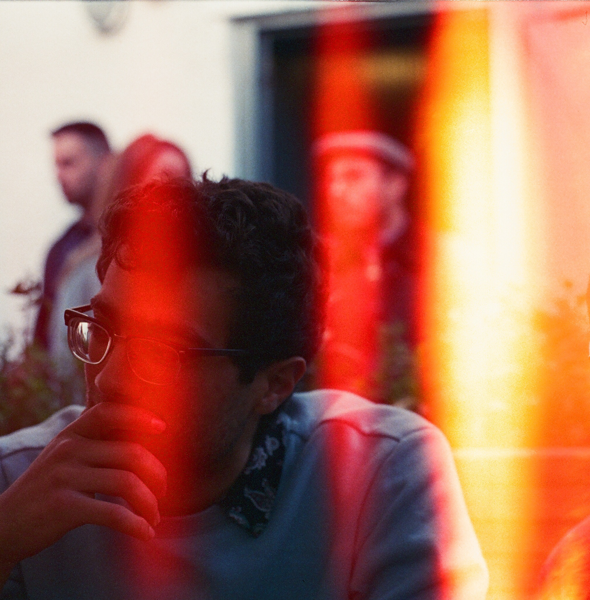
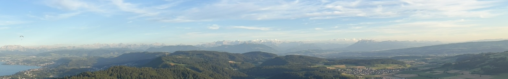

Photo taken at the White Rabbit
Assistant Professor of Mathematics
University of Central Florida
wissam "dot" ghantous "at" ucf.edu ·
old site
Hello! Welcome to my website.
I am a tenure-track Assistant Professor in the Department of Mathematics at the University of Central Florida, as well as a member of the UCF Cyber Security and Privacy Cluster and the UCF Quantum Initiative.
Previously, I was a postdoctoral researcher for one year at the École Normale Supérieure (Paris). Before that, I completed my PhD at the University of Oxford in 2023.
My main research interests are computational number theory and post-quantum cryptography.

Talks, Visits and Conferences
2026
- July 2026. CedarCrypt. Cyprus, Greece.
- July 2026. Seventeenth Algorithmic Number Theory Symposium, ANTS-XVII. Groningen, Netherlands.
- June 2026. RNT 7: Rethinking Number Theory. Online.
- May 2026. MaGIC: Marche Workshop on Group Actions in Cryptography. Italy.
- April 2026. CAE in Cybersecurity Community 2026 Symposium. Pittsburgh, PA, USA.
- March 2026. AMS Fall South Eastern Sectional Meeting. Savannah, GA, USA.
- March 2026. Gainesville International Number Theory Conference. Gainesville, FL, USA.
- March 2026. Arizona Winter School 2026. Tucson, AZ, USA.
- January 2026. JMM. Washington D.C., USA.
Earlier talks (2019–2025)
2025
- October 2025. Number theory seminar. UC Boulder, CO, USA.
- October 2025. UF Algebra seminar. University of Florida, Gainesville, USA.
- October 2025. USF RTG seminar. University of South Florida, Tampa, USA.
- October 2025. Second Applied Algebra Workshop. Florida Atlantic University, Boca Raton, USA.
- October 2025. AMS Sectional Meeting. Tulane University, Louisiana, USA.
- September 2025. Cifris 2025. Roma Tre University, Roma, Italy.
- August 2025. Darmonfest: Arithmetic Cycles, Modular Forms, and L-functions. Centre de Recherches Mathématiques, Montréal, Canada.
- August 2025. Workshop on Isogeny Graphs in Cryptography. BIRS, Banff, Canada.
- July 2025. LMFDB, Computation, and Number Theory (LuCaNT). ICERM, RI, USA.
- June 2025. First Applied Algebra Workshop. University of South Florida, Tampa, USA.
- May 2025. Eurocrypt. Madrid, Spain.
- March 2025. Mid-Atlantic Seminar On Numbers VII. University of Maryland, MD, USA.
- March 2025. The Legacy of John Tate, and Beyond. Harvard, MA, USA.
2024
- October 2024. Québec-Maine Number Theory Conference. Université Laval, Quebec, Canada.
- September 2024. Palmetto Number Theory Series, PANTS XXXVIII. Wake Forest University, NC, USA.
- September 2024. Colloquium talk. University of South Florida, Tampa, USA.
- September 2024. Colloquium talk. University of Central Florida, Orlando, USA.
- July 2024. Sixteenth Algorithmic Number Theory Symposium, ANTS-XVI. MIT, USA.
- June 2024. Modular Forms, L-functions, and Eigenvarieties. ENS, Paris, France.
- May 2024. Eurocrypt. Zurich, Switzerland.
- March 2024. Visit to UCF. Orlando, USA.
- January 2024. Workshop Quantum Meets Classical Cryptography. Sorbonne University, Paris, France.
2023
- August 2023. Workshop on Isogeny Graphs in Cryptography. BIRS, Banff, Canada.
- February 2023. Wadham College SCR invited talk. University of Oxford, UK.
- February 2023. Junior Number Theory seminar. University of Warwick, UK.
- January 2023. Junior Number Theory seminar. University of Oxford, UK.
- January 2023. Senior Number Theory seminar. University of Warwick, UK.
2022
- October 2022. PQCifris 2022. University of Trento, Italy.
- September–October 2022. Visit to McGill University, Montreal, Canada.
- September 2022. Elliptic Curves and Modular Forms in Arithmetic Geometry, celebrating Massimo Bertolini's 60th birthday. Università degli Studi di Milano, Italy.
- August–September 2022. Automorphic Forms Summer School. Erdős Center, Budapest, Hungary.
- August 2022. Crypto2022 (including MathCrypt). UCSB, Santa Barbara, CA, USA.
- August 2022. Fifteenth Algorithmic Number Theory Symposium, ANTS-XV. University of Bristol, UK.
- July 2022. ICM Sectional Workshop on Number Theory and Algebraic Geometry. ETH Zürich, Switzerland.
- May 2022. Research visit to Università degli Studi di Bari Aldo Moro, Italy.
2021
- September 2021. Crittografia e codici (Italian Mathematical Union). Cryptography and Coding Theory, First Annual Conference (virtual).
- August 2021. Workshop on Supersingular Isogeny Graphs in Cryptography (virtual). BIRS, Banff, Canada.
2019
- March 2019. The Montreal-Toronto Workshop in Number Theory — Period maps. McGill, Canada.
The photo above shows the Swiss landscape seen from the Uetliberg TV tower, taken during the ICM sectional meeting of 2022.